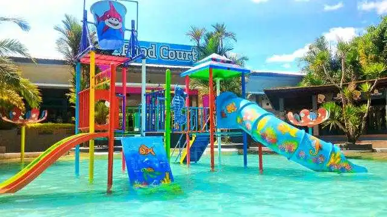

DIRA PARK

Berada tak jauh di selatan kota Jember hanya berjarak 24 kilometer, tepatnya di Jalan Raya Blatter kilometer 4, Desa Pontang, Kecamatan Ambulu,
obyek wisata yang satu ini hampir tak pernah sepi pengunjung. Anak-anak bermain di kolam renang, sementara orang tua mereka berbelanja di toko.
Maklum, di sini berdiri pertokoan dan kolam renang sekaligus, sebuah konsep wisata one stop shopping pertama di Kabupaten Jember : Dira Collection, Dammiq, dan Pontang Jaya Water Park.
Pontang Jaya Water Park sendiri mempunyai fasilitas kolam renang berbagai ukuran, panggung hiburan dan arena permainan anak-anak. Airnya terkenal sangat jernih dan segar.